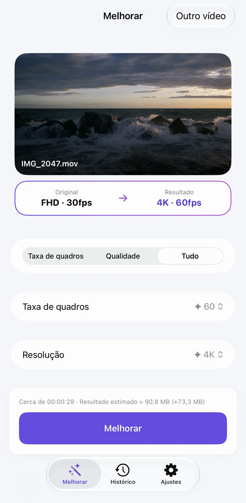
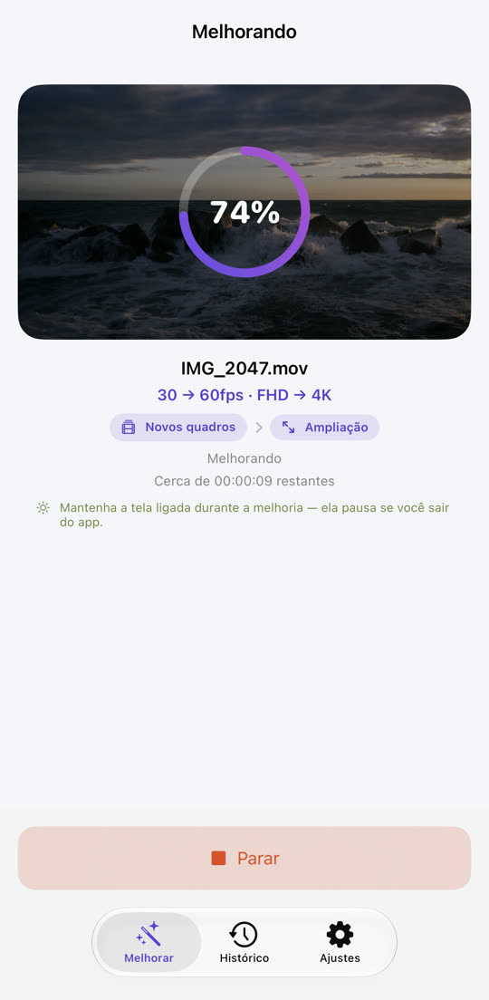
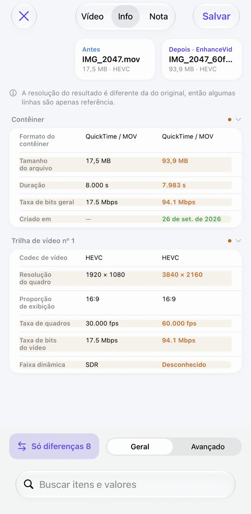
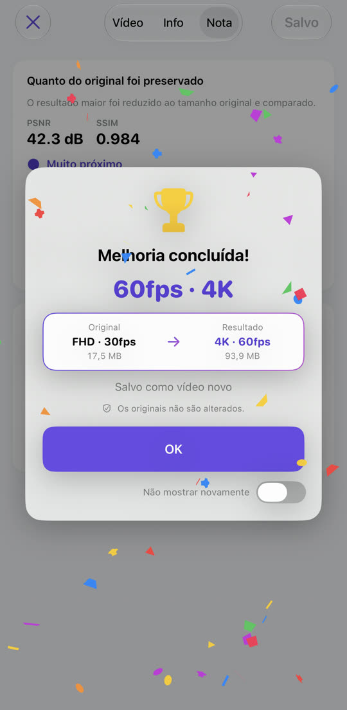

Vídeo travado, agora fluido.
Vídeo borrado, agora nítido.
De 30 para 60 fps, de Full HD para 4K. O EnhanceVid calcula quadros novos entre os que você gravou e aumenta a resolução para mais detalhes. Tudo acontece no seu iPhone e o resultado é salvo como um vídeo novo ao lado do original, que fica intacto.
Baixar na App StoreGrátis · iOS 26 ou posterior · iPhone · iPad · Mac com chip Apple

Menos borrão, mais detalhes.
A resolução é aumentada com a ampliação do Apple MetalFX. Arraste a linha para comparar.

 OriginalMelhorado
OriginalMelhorado
Imagem de exemplo: um original em baixa resolução ampliado, ao lado da versão melhorada.
Movimento travado, agora suave.
Quadros novos são calculados entre os originais. Mudanças de cena nunca são misturadas, então não aparecem fantasmas.
O movimento foi exagerado para a diferença ficar visível.
Escolha, comece, compare, salve.



Tudo de que você precisa, incluído.
Limpe vídeos granulados gravados com pouca luz. Em aparelhos compatíveis.
4K 60 fps para 30 fps, 4K para Full HD: reduzir também é possível.
Reprodução lado a lado, tabela de dados e notas de qualidade (PSNR, SSIM, VMAF opcional).
Vídeos HDR e Dolby Vision gravados no iPhone continuam em HDR.
Vídeos do app Fotos e do app Arquivos, incluindo MKV, WebM e AVI.
O resultado é salvo como vídeo novo. O original nunca é alterado nem apagado.
Nada é enviado e não precisa de conta. Grátis, mantido por anúncios — Privacidade